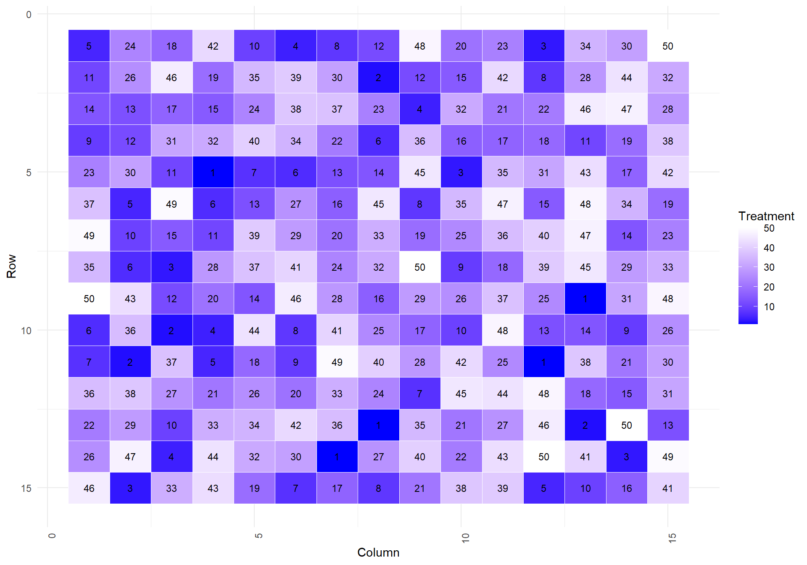
4 Results
4.1 Simulation set-up
To begin the Results section, we’ll look at the foundational set-up of my simulation. In order to streamline the computation within limited computational resources, I implemented a series of simplifications.
For \boldsymbol{G} matrix, I set it to be a diagonal matrix with equal values along the diagonal. It implies that there is no correlation between rows and columns, meaning that the effects for rows and columns are considered independent. And the equal values along the diagonal indicate that the variance of these row and column effects is the same. In this simulation it is \boldsymbol{G}_s = 10\boldsymbol{I}_{n_r+n_c}
For \boldsymbol{R} matrix, similarly, it is set as a diagonal matrix with identical values along the diagonal. implying that the geographical locations of different plots are independent of each other and variance of residuals is uniform across plots. In this simulation it is \boldsymbol{R}_s = 0.1\boldsymbol{I}_{n_r\times n_c}
To compare the differences between algorithms, we used the design function from the R package blocksdesign to calculate the optimized A-value A_{blocksdesign} basing on Edmondson (2020), which we then compared to the results from our iterative process.
For the consistency across all algorithms, we aimed to explore the largest feasible range of row, column, and treatment combinations. We set the maximum number of iterations M=2000 for each algorithm. And we add an early termination criterion: if the iterative algorithm’s A-value approaches A_{blocksdesign} within a specified tolerance T_A, the algorithm would stop iterating and output the A-value and design matrix. In this simulation we set T_A=2\times 10^{-4} Therefore we can evaluate the performance of different algorithms across various combinations of row, column, and treatment numbers by comparing the total computational time required, the actual iteration number before reaching either M or an early termination based on A_{blocksdesign}, and the absolute difference between the algorithm’s and A_{blocksdesign}.Basing on these evaluations, we can identify how effectively each algorithm performs under different complexity levels and determine the algorithm’s efficiency and accuracy across different cases.
In setting up random selection, the final parameter is the step length s. During runtime, the process of selecting permutations for step-length iterations often accounts for a large portion of the total functioning time.Additionally, this selection becomes especially challenging when the row, column, and treatment numbers are low. In such cases, while applying filtering criteria, it can be difficult to find a sufficient number of unique permutations that meet the requirements, as the design itself may not contain enough options. To ensure the algorithm runs smoothly and completes within a reasonable time, we set the step length to s=3.
For the SA algorithm, we need to set the initial temperature T_0.It actually depends on the acceptance rate for higher A-values at the start of the iteration process. As mentioned in the previous section, we typically aim for an initial acceptance rate of around 0.8. That is we hope \exp(-A_{\bigtriangleup}/T_0) \approx 0.8. We often lack precise information on A_{\bigtriangleup} before the algorithm, we set the initial temperature based on an empirical estimate. We set T_0=1. Some adaptive algorithms for setting the initial temperature are often discussed in the literature.
To examine combinations of row, column, and treatment numbers, we tested a wide range of configurations. Row number ranged from 5 to 25, and column number varied from 5 to 16. For each row and column combination, we tested treatment numbers of 10, 20, 50, 80, and 100. To ensure that the blocksdesign functions operated correctly and to maintain general applicability, we ship a combination, if the product of rows and columns was less than twice the treatment number.It ensures that each treatment could have at least two replication. For each combination of row, column and treatment number, we conduct three replication for more accurate observation.
For the cases when treatment number cannot evenly divide the product of rows and columns, suppose n_{plot}=n_r\times n_c and treatment number is n_{\tau}, we set base replication number as \lfloor \frac{n_{plot}}{n_{\tau}} \rfloor, and randomly pick (n_{plot}\mod n_{\tau}) treatments assign \lfloor \frac{n_{plot}}{n_{\tau}} \rfloor+1 replication to these treatments. This approach ensures that the number of each treatment is as close as possible to one another.
4.2 Result analyze
4.2.1 General behviour of algorithms
Now we observe the overall behaviour of the algorithm, to examine the change of A-value during the process. We here use example with n_c=n_r=15 and n_\tau=50. we now use blocksdesign functions to generate a optimal design \mathcal{D}_{op} with A-value A_{op} = 0.5027 under set-up, NB criteria C_{NB}(\mathcal{D}_{op})=3 and ED criteria MRS(\mathcal{D}_{op})=MCS(\mathcal{D}_{op})=5. See detailed assignment as follow
4.2.1.1 Random selection
We now look at how random selection behave during the process. The iteration stops at 549-th step with output A-value A_{rs}=0.050478 and NB criteria C_{NB}(\mathcal{D}_{rs})=4 and ED criteria MRS(\mathcal{D}_{rs})=5 and MCS(\mathcal{D}_{rs})=7. The changes in the A-value over iterations and the specific design are shown in Figure 4.2 and Figure 4.3.
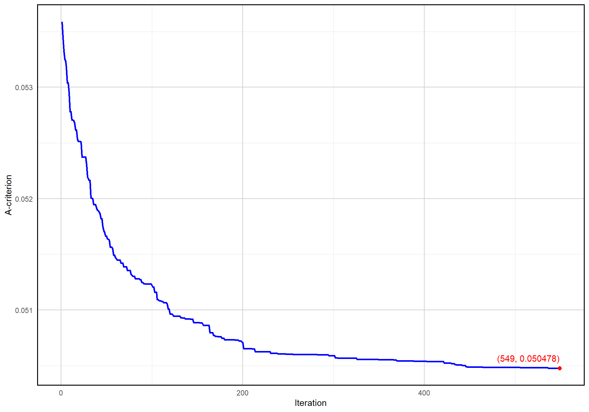
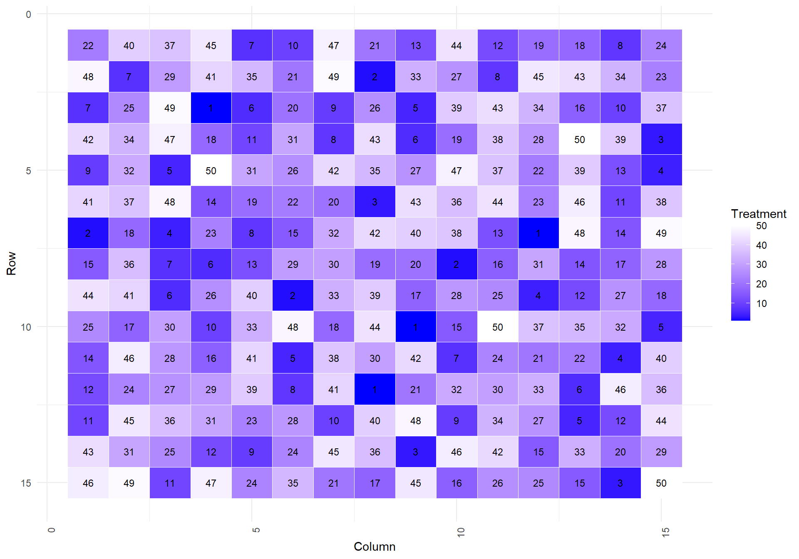
From the results, the A-value obtained by Random Search is relatively close to that of the block design, though slightly larger, as is the NB statistic. Recall that we would like A-value and C_{NB} to be as small as possible, and for both MRC and MRC, the larger the better. Therefore, the Random Search outcome has a larger minimum column span, meaning it preform better on evenness of distribution.
4.2.1.2 SA with log cooling schedule
For SA using the log cooling schedule Equation 3.4,Unlike random selection, the algorithm accepts higher A-values with a certain probability, causing fluctuations in A-values throughout the iterations, resulting in rises and falls rather than a steady decline. Details can be seen in the Figure 4.4 and Figure 4.5.
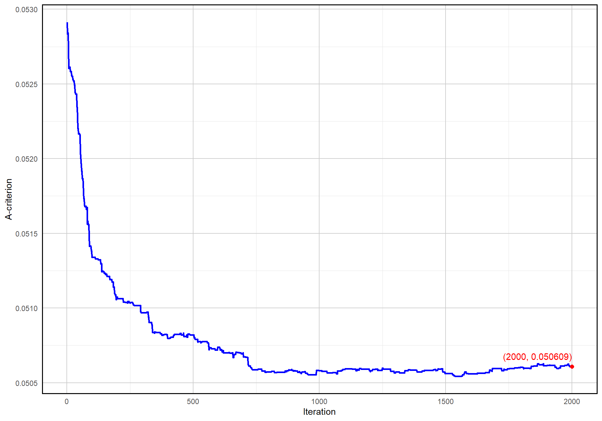
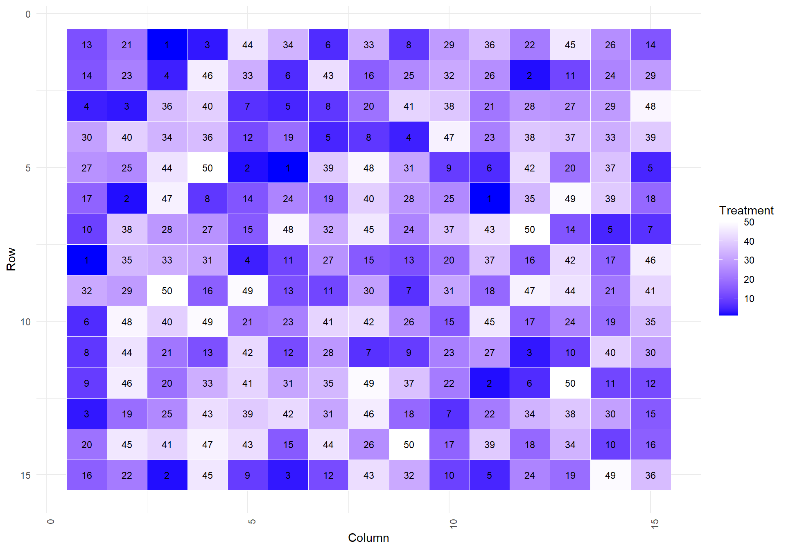
As it indicate in the plot, the process went through all iterations, reaching maximum iteration number M. At the 2000th iteration, the A-value is A_{SAlog}=0.050609 with NB criteria C_{SAlog}(\mathcal{D}_{SAlog})=5 and ED criteria MRS(\mathcal{D}_{SAlog})=7 and MCS(\mathcal{D}_{SAlog})=6.
Compared to random selection, the optimization of the A-value in SA is less effective, since the limitation of a maximum iteration number M.Similar to the NB statistic, where SA shows a less optimal outcome than the block design. However, the two ED statistics given by SA are significantly improved compared to those provided by the blockdesign function and random selection. Because of the slower decrease in acceptance rates for higher A-values with log cooling schedule, we observe that the algorithm occasionally continues to accept larger A-values even in the latter stages.
4.2.1.3 SA with exp cooling schedule
This is also SA but with an exponential cooling schedule Equation 3.5. Although exponential cooling schedule does not theoretically guarantee SA convergence to the global optimum, it can produce a relatively near-optimal solution within finite computational resources and time constraints. Because of the rapid temperature decrease in exponential cooling, the algorithm initially shows fluctuations in A-values at the beginning of the iterations. However, as the number of iterations increases, the acceptance rate for larger A-values declines quickly, and algorithm tend to avoid accepting higher A-values.Details are shown in the Figure 4.7 and Figure 4.5
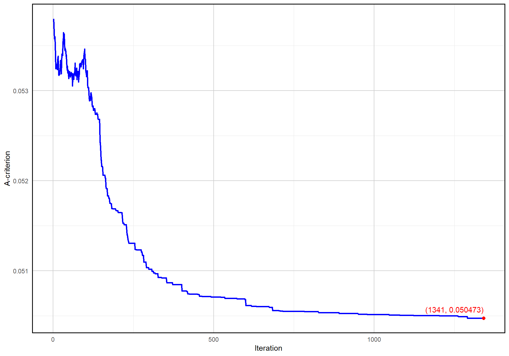
The iteration process stopped at the 1341-st iteration because the A-value had come sufficiently close to the blockdesign A-value. The results show that the A-value achieved is A_{SAexp} = 0.050473, with an NB statistic C_{SAexp}(\mathcal{D}_{rs})=4, and ED statistics MRS(\mathcal{D}_{SAexp})=5 and MCS(\mathcal{D}_{SAexp})=6.
The exponential cooling schedule achieved similar A-values and NB statistics to those of random selection. However, its performance on the ED statistic was less effective compared to both random selection and log cooling. The reason may be the early termination of iterations in exponential cooling, which limited the exploration of the whole design matrix space.
In contrast, random selection evaluates multiple permutations (equal to the step length s) in each iteration, which allows it to consider a broader range of potential solutions. Meanwhile, log cooling slows down the convergence, allow it has sufficient iterations to explore the solution space, although it selects only one neighbour at a time.
4.2.2 Analysis by Algorithm
Now we begin to explore the relationship between function runtime and the number of rows, columns, and treatments. Generally, runtime is proportional to the number of iterations. Here, we have set the maximum number of iterations to 2000. If in the simulation most runs reach the maximum number of iterations, then evaluating the relationship between runtime and rows, columns, and treatment numbers will no longer be meaningful.Therefore, before the analysis, we need to examine the distribution of iteration numbers. If most of the simulations do not reach the maximum number of iterations, we can use runtime as a measure of computational efficiency.
For random selection, many simulations did not reach the maximum number of iterations, which can be observed in Figure 4.8.
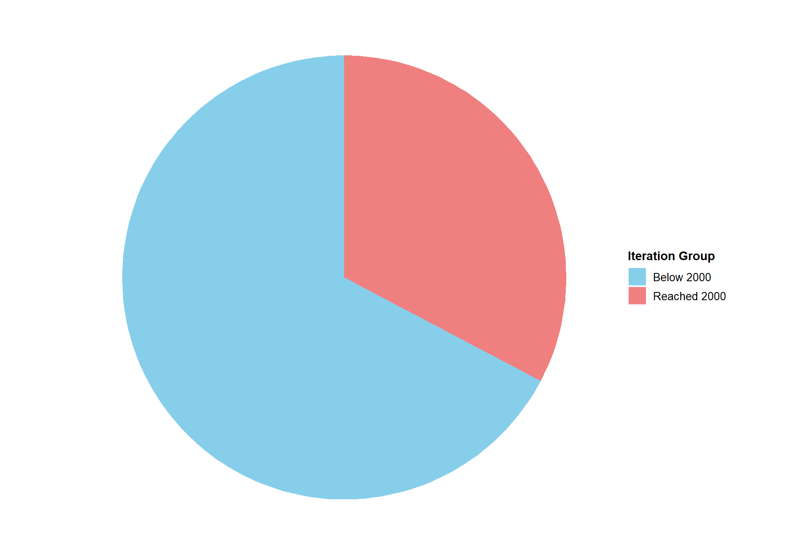
So we present the relationship between runtime and the number of rows under different treatment numbers, as shown in the figures below. As mentioned earlier, we have three replications for each combination of rows, columns, and treatment numbers. We calculate the average of the three replications for each combination as the final result.
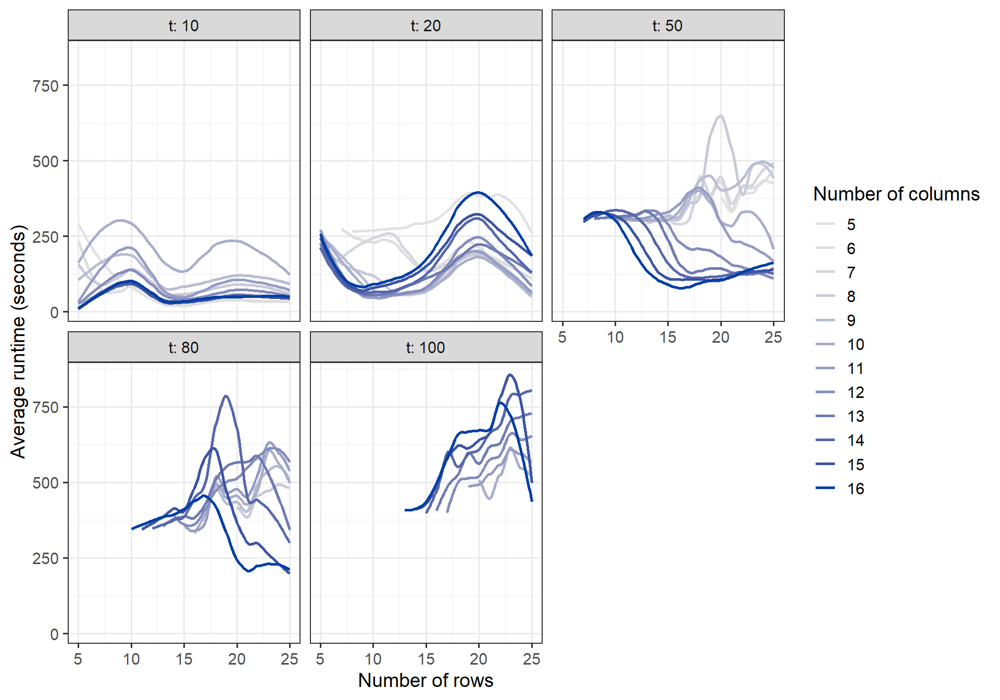
We can observe that, under different numbers of columns, the relationship between rows and runtime tends to be similar. Here, we will not discuss the origin or significance of this trend but instead focus on the relation between variables and runtime. There is no clear positive or negative relationship between the number of rows and runtime. We see that as the number of rows increases, the runtime does not consistently increase or decrease, which is related to the randomness of random selection. During the iteration process, we might be lucky enough to find a good design early and terminate the iteration, or the A-value may gradually decrease over the iterations.
However, by observing the vertical axis of different subplots, we can see that as the number of treatments increases, the range of runtime fluctuations also increases. To demonstrate this, we present the relationship between the number of treatments and runtime under different rows and columns as Figure 4.10 shows.
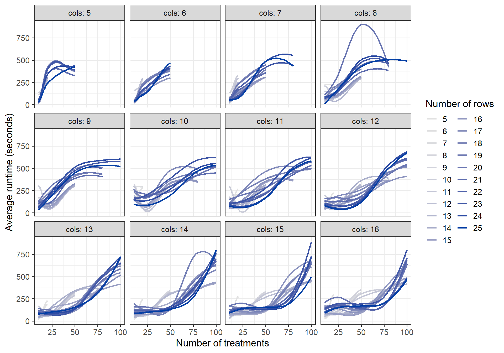
By observing the figure, we can see that as the number of treatments increases, runtime shows a positive correlation, indicating that with more treatments, random selection requires more time to find permutations and make comparisons.
This approach leads us to consider the relationship between the number of treatments and runtime. However, for SA with log cooling, due to the slow convergence of log cooling and the limitation of a maximum number of iterations, the algorithm often runs until the maximum number of iterations is reached. This makes it difficult to observe the relationship between the number of treatments and runtime, as runtime is often related to the maximum number of iterations. See Figure 4.13 below for details.
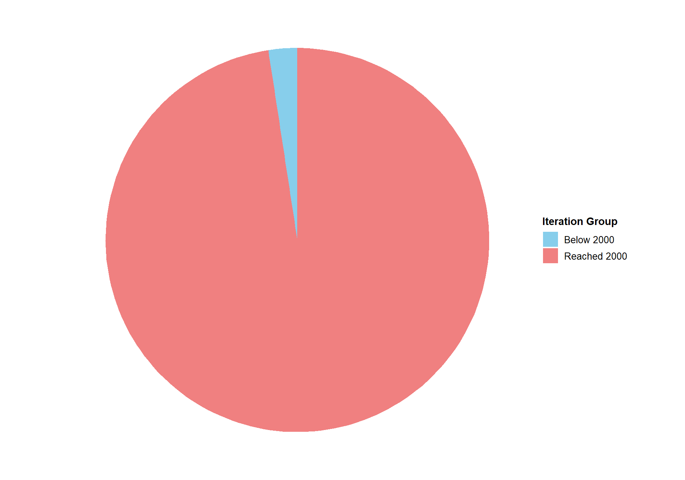
In the figure, we can see that only when the number of rows and columns is small, meaning the design space is limited, SA with log cooling can terminate before reaching the maximum number of iterations. In most other cases, the algorithm stops when it reaches the maximum number of iterations. Therefore, we use the difference d = (A_{SAlog}-A_{op})/A_{op} between the A-value obtained by SA with log cooling at the maximum number of iterations and the A-value calculated by the blockdesign function to evaluate the impact of the number of rows, columns, and treatments on the efficiency of the algorithm.
We first look at the influence of the number of rows on the distance. Similar to the analysis method used for random selection, we provide Figure 4.11.
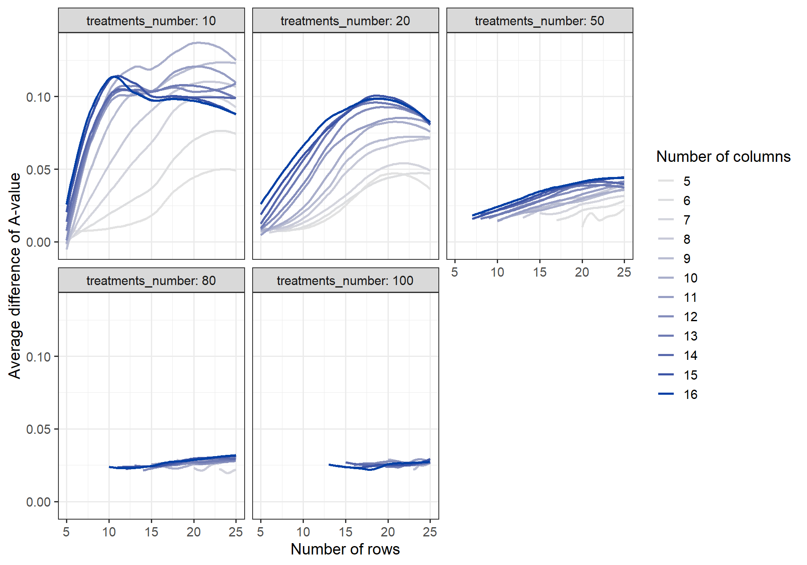
From the above figure, it is evident that the number of rows and columns is positively correlated with the difference. The greater the number of rows, the larger the difference. Similarly, the greater the number of columns, the higher the lines (towards the red), indicating a larger difference. Based on previous experience, we attempt to examine the relationship between the number of treatments and distance, as shown in the figure below.
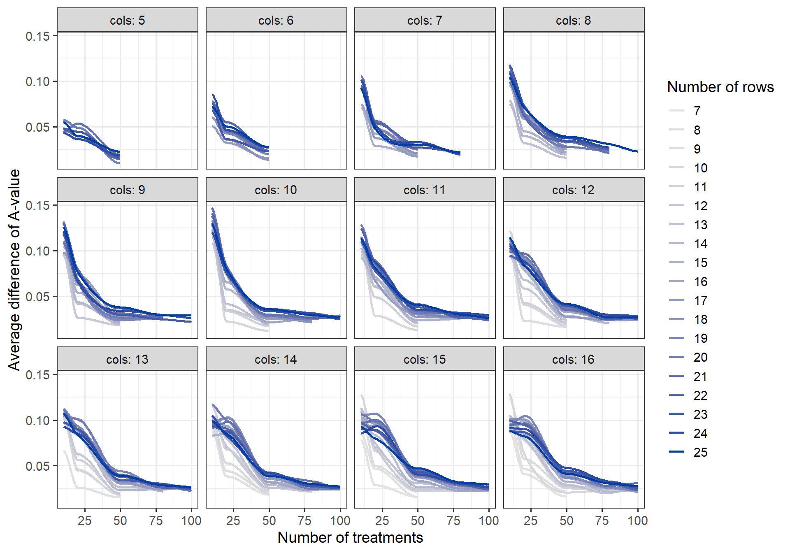
The results show that the treatment number is negatively correlated with the difference. In other words, as the treatment number increases, the resulting value (whether the iteration stops early or reaches the maximum number of iterations) tends to be closer to the optimal value. However, this does not necessarily mean that the absolute distance to the optimal value decreases.
For SA with exponential cooling, we also examine the distribution of the iteration numbers.
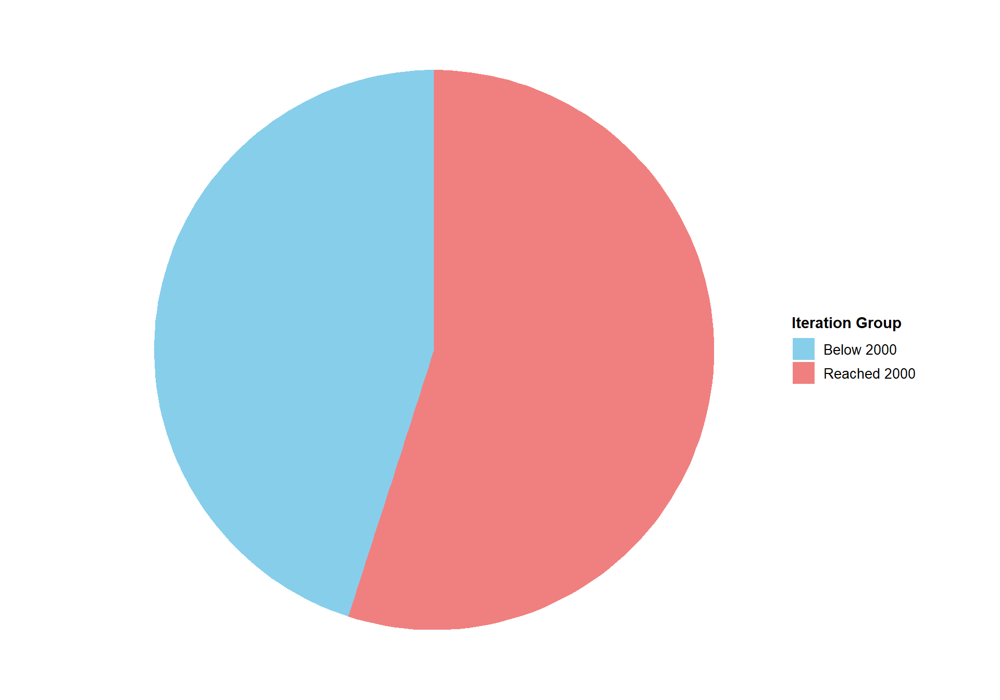
It can be seen that most of the simulations did not reach the maximum number of iterations, so we can use runtime to compare the effects of rows, columns, and treatment numbers on the algorithm. Details in Figure 4.14
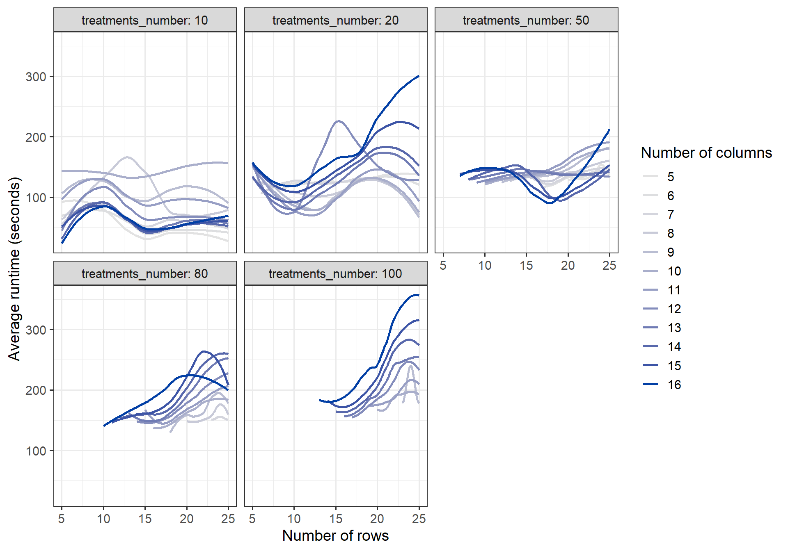
We can see that when the treatment number is small, the influence of rows and columns on runtime is not significant. This could be because the design space is smaller, and for randomness, the algorithm stops after fewer iterations. As the treatment number increases, the impact of rows and columns on runtime becomes apparent: the greater the number of rows and columns, the longer the runtime.This effect can also be observed when examining the influence of the treatment number on runtime.
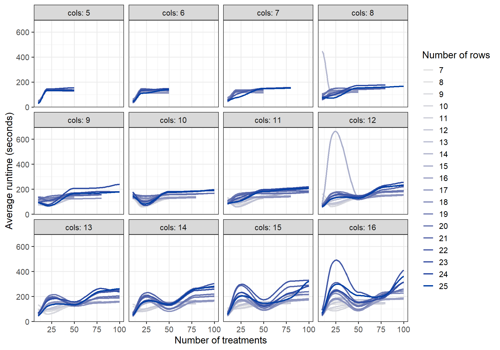
Similarly, we can observe that as the treatment number increases, the runtime also increases. Additionally, as the number of rows increases, the vertical axis of the plot also grows, indicating their positive correlation.
4.2.3 Comparison Between Algorithms
Now we compare the effectiveness of different algorithms. To simplify the process, we focus on observing the impact of the number of rows, columns, and treatments on the average runtime and the average difference under equivalent conditions. For example, when comparing the effect of the number of rows on the difference for different algorithms, we take the average of the difference for different column counts and treatment numbers at the same row level to simplify the visualization and makes the comparison more intuitive. Before making comparisons, it is important to note that, for our computational resource limitations, we have limited the maximum iteration number to 2000. Therefore, our comparison cannot determine which algorithm is better. Therefore, it aims to compare the performance of different algorithms under the same computational constraints. Here, we compare the effects of row number, column number, and treatment number on the difference and runtime across different algorithms.
4.2.3.1 Comparing with difference
Now, we use the difference to compare the computational efficiency of different algorithms. We present the figures showing the influence of row number, column number, and treatment number on the difference for the three algorithms. Note that for random selection and SA with exponential cooling, the method for calculating the difference is the same as for SA with logarithmic cooling, which means it represents the relative difference, that is d = (A_{op}-A_{result})/A_{op}.
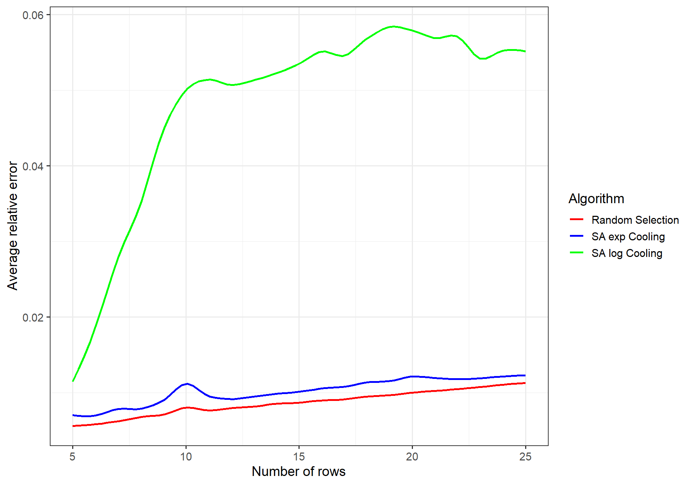
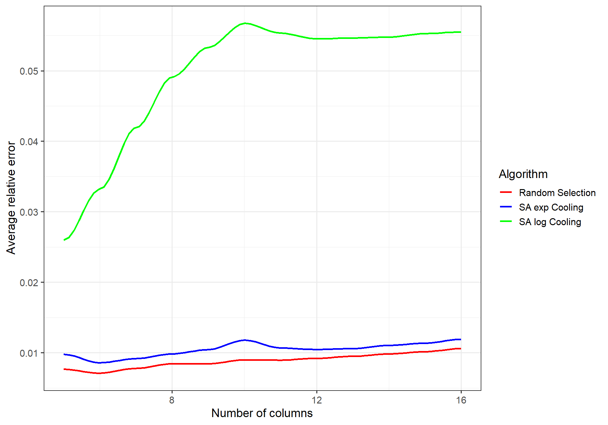
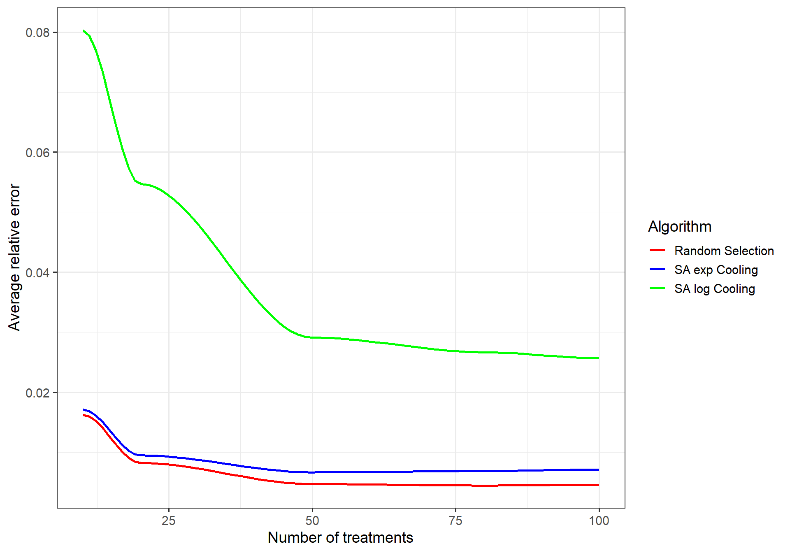
Overall, it can be observed that for the difference, random selection has the smallest value, SA with exponential cooling is slightly larger, and SA with logarithmic cooling has the largest value. Moreover, SA with logarithmic cooling is more influenced by the three variables.
In general, for all three algorithms, as the number of rows and columns increases, the relative difference also increases. However, the difference is negatively correlated with the treatment number. As mentioned earlier, a smaller relative difference does not necessarily mean that the absolute distance to the optimal value decreases. We can use the Figure 4.19 below to support this point.
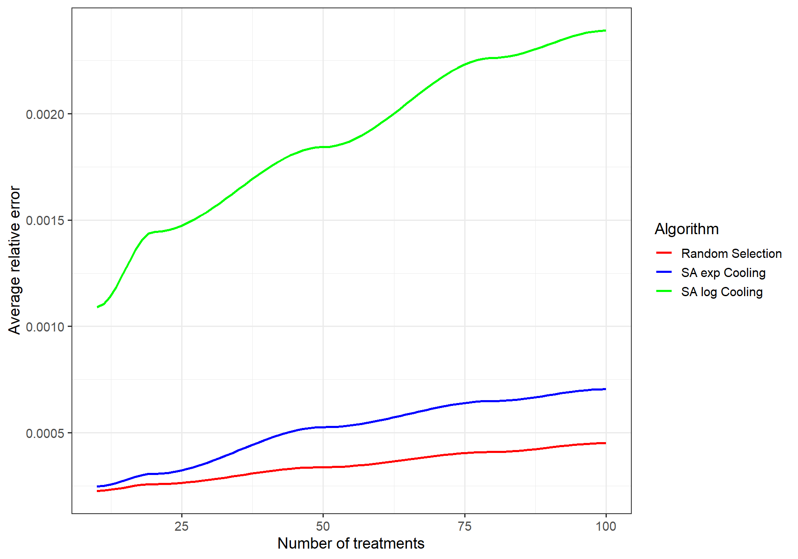
It can be seen here that if we consider the absolute difference, it is actually positively correlated with the treatment number.
4.2.3.2 Comparing with runtime
Now, let’s see what the comparison looks like from the perspective of runtime. We present Figure 4.20, Figure 4.21, and Figure 4.22 to illustrate this.
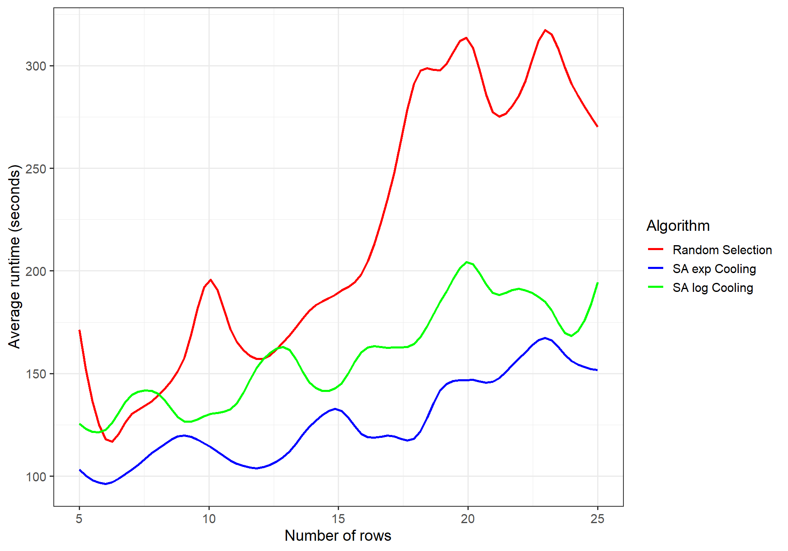
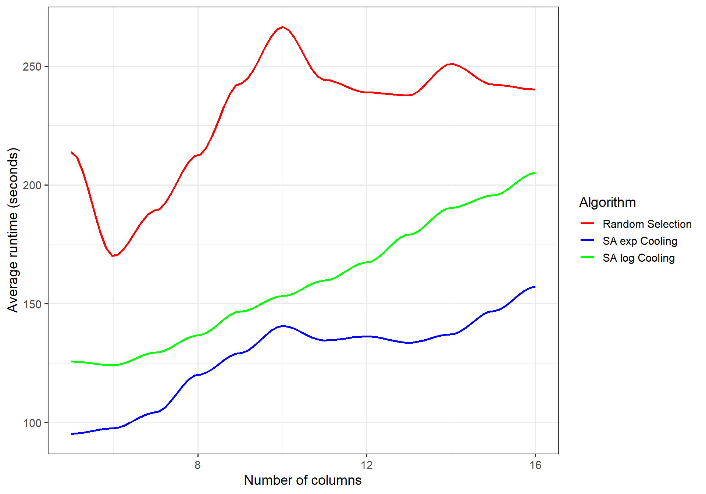
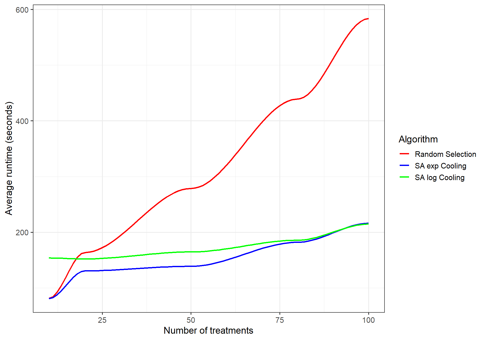
From the figures, we can see that SA with exponential cooling is the fastest, while SA with log cooling takes a bit longer, and random selection requires the longest time. When the number of rows, columns, and treatments is still small, for the design space is limited and the randomness of the algorithms, the differences are less noticeable. However, as these numbers increase, the differences in runtime become more significant, with random selection showing the fastest increase in runtime. Overall, the number of rows, columns, and treatments are all positively correlated with runtime, but the treatment number has a more direct impact on runtime.
4.2.4 Conclusion
Now, we summarize the computational performance of the three algorithms under constrained computational resources.
First, for random selection, as seen in the analysis above, this algorithm provides relatively accurate results but requires a longer runtime. When the number of treatments increases, the runtime significantly rises. In our simulations, the step-length was set to 3. Increasing the step-length would allow random selection to search the design space more extensively but would require more time.
Next is Simulated Annealing (SA). Overall, the iteration speed is faster compared to random selection. And increasing the number of rows, columns, and treatments requires more iterations and longer runtime. Although the log cooling schedule theoretically ensures convergence to the global optimum, as shown in the simulations above, it may require more iterations to reach the global optimum. On the other hand, the exponential cooling schedule converges faster, and it often ends iteration process early in the simulations. As mentioned earlier, while it cannot theoretically ensure convergence to the global optimum, it can provide an approximately optimal solution within a relatively short time frame under constrained computational resources and avoid local optima to some extent.